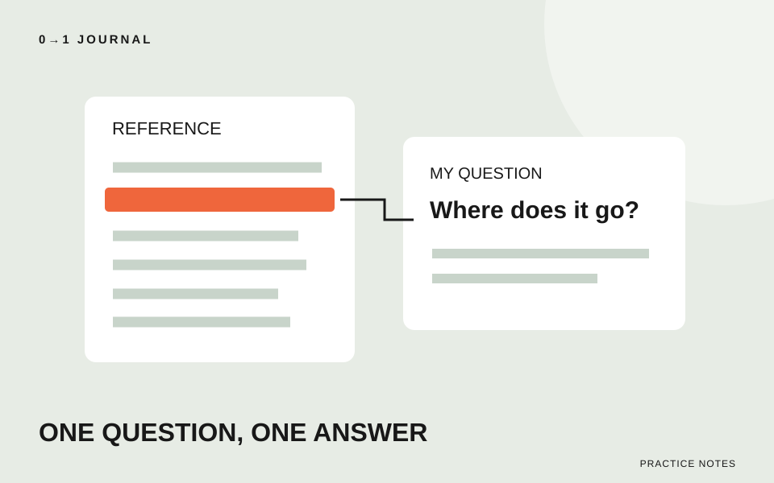

この記事の目次
検索して開いた資料に知らない単語が並び、読む前より困ってしまう。そんなときは、読む量を増やす前に「何が分かれば作業へ戻れるか」を一文にします。この記事では、技術資料を使って一つの疑問へ答える練習を提案します。
題材は架空の絵本交換会の案内ページです。「参加方法のページへ移る入口を作りたいが、aとhrefが何をするのか分からない」という場面を使います。イベントの条件や参加方法は、実在の案内ではありません。
検索語より先に、作りたい動作を一文にする
最初のメモは「HTMLを理解する」ではなく、「文字を押したら参加方法のページへ移るようにしたい」と書きます。分からない名前は、その下へa、hrefと並べれば十分です。
目的と単語を分けると、資料を開いた後に読む場所を選べます。「aとは何か」は用途の説明、「行き先をどこに書くか」は属性の説明が候補になります。属性とは、要素へ設定を加えるために書く名前と値のことです。
検索結果の短い説明だけで結論を決めず、リンク先を開いてページ名と対象の技術を確認しましょう。同じ単語でも、別の言語やツールの説明なら今回の疑問には答えられません。
用途を知りたいときと、書き方を知りたいときで読む節を変える
今回はMDNのa要素の資料を開きます。冒頭で要素の用途を読み、Attributesのhrefの項目で行き先の指定を確かめ、Examplesで組み合わせを見ます。MDNはWeb技術の参照資料であり、個別のブラウザー製品の取扱説明書とは区別して使います。
この資料では、a要素にhrefを付けて、ページなどへのリンクを作ることを確認できます。調査メモには「aは入口、hrefは行き先の指定」と自分の言葉で短く残します。原文を大量に写すより、どの疑問が解けたかを対応させてください。
一方、「特定のブラウザーで使えるか」が問いなら、用途の説明だけでは足りません。互換性の節を読み、自分が使う機能と対象の環境を照合する必要があります。ページ全体についての大まかな表示を、すべての属性の対応状況と同一視しないようにします。
サンプルにある設定を、全部必要だと決めない
例に知らない属性が付いていても、まず今回の動作に関係するかを分けます。別のタブで開く例と、通常のページ移動の例では、調べる設定が増えることがあります。「サンプルにあるから必須」とメモするのは避けましょう。
今回必要なのは、移動する入口と行き先の関係です。見た目を変える指定や、今回使わない属性は別の調査欄へ移します。ただし、資料に注意点があれば、その設定を使うときの条件として読みます。都合のよい例だけで判断しないためです。
そもそもページ移動ではなく画面内の操作だった場合は、リンクとボタンを使い分ける記事で目的を整理し直せます。調べる対象が違っていたと気付くことも、調査の成果です。
答えと根拠、残った疑問を三つの欄に残す
調査メモを「分かった」で終えず、次の形で書きます。
- 答え：参加方法へのページ移動には、行き先を指定したリンクを使う。
- 根拠：MDNのa要素の冒頭と、href属性の説明。URLと読んだ日も添える。
- 未確認：参加方法ページの保存場所と、実際に移動できるか。
資料から分かった仕様と、自分のページで確かめた結果は別の欄です。資料を読んだだけなら「移動できた」とは書きません。後で試した際には、使ったファイルと結果を追記します。
説明を一文にできなければ、どの単語で止まったかを印付けします。次の調査ではその単語だけを扱い、最初の疑問に戻って答えがつながるかを見直してください。
15分を目安に、調べる問いを一つだけ記録する
手元の教材から分からない要素を一つ選び、やりたいことを一文にします。参照資料の用途と必要な設定を読み、答え・URL・未確認事項を残してください。時間は練習の目安で、全項目を読み切る必要はありません。
練習用の題材には、Semantic HTMLの無料レッスンも使えます。最後にメモだけを読み返し、元の疑問へ答えているか、実行していないことを確認済みにしていないかを点検しましょう。
記載内容へのご質問や訂正のご連絡は、hello@junkbranding.comまでお願いします。